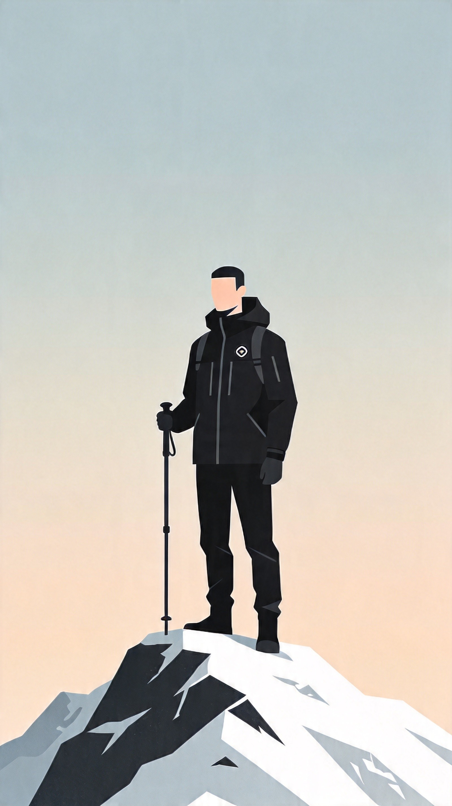

你的徒步人格是
SPCH
孤狼征服者
外号：徒步卷王·山顶独逼

山野匹配度
92%
解析
别人徒步散心，你徒步渡劫。重装虐线单人冲，攻略比论文细，零社交零废话，登顶只发一个句号，山见了你都得立正。
仅供娱乐参考，不具实际价值
四维度详细分析
S
能量维度
独行 vs 结伴
你倾向于独自徒步，在独处中恢复能量，无需社交互动也能获得满足感。
独行倾向
85%
P
行动模式
规划 vs 随性
你习惯详细规划徒步行程，注重攻略准备，行动前会制定明确的目标和路线。
规划倾向
78%
C
自然联结
征服 vs 沉浸
你将徒步视为挑战，注重登顶和征服，追求成就感和路线难度带来的满足感。
征服倾向
91%
H
耐受风格
硬核 vs 轻享
你偏好硬核徒步路线，享受身体挑战和极限体验，对艰苦条件有较高的耐受度。
硬核倾向
88%
最佳徒步搭子匹配
神仙搭子
耐受一致（H↔H）+ 能量互补（S↔G），徒步节奏匹配，互不拖累，体验极佳。
GPCH
领队征服者
互补类型：能量维度互补
对方的外向结伴特质能平衡你的独行倾向
避雷组合
H硬核 × S轻享、P规划 × F随性，徒步必闹掰，谁走谁难受。
SFBS
佛系独行人
冲突类型：耐受风格冲突
对方的轻享偏好与你的硬核风格严重不匹配
专属徒步建议
推荐路线类型
- 高难度单人重装线
- 技术型山峰攀登
- 偏远地区探索路线
- 避免盲目冲线导致风险上升
- 避免无备用方案就进高风险路段
- 避免忽视天气变化强行推进
组队建议
- 优先选择单人徒步
- 如需组队，寻找同样硬核的伙伴
- 避免与休闲型徒步者组队
- 避免节奏不一致强行捆绑
- 避免不沟通就临场改计划
- 避免角色职责不清造成混乱
装备策略
- 投资专业轻量化装备
- 注重装备性能和可靠性
- 无需过度关注装备美观度
- 避免过度负重拖垮体能
- 避免缺少基础安全件
- 避免补给配置与路线强度失配
分享你的徒步人格
让朋友了解你的山野人格，找到匹配的徒步搭子
复制结果文案，一键发给朋友